Patrón Backtracking — Elegir · Recursar · Retroceder
Fuente del patrón general que usamos en backtracking()
TheAlgorithms / Python — backtracking/all_combinations.py
https://github.com/TheAlgorithms/Python/blob/master/backtracking/all_combinations.py
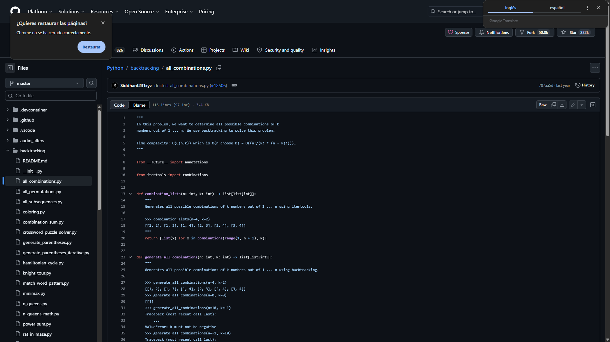
El repositorio TheAlgorithms tiene 21 algoritmos de backtracking en Python. El de all_combinations.py usa exactamente el mismo ciclo de 3 pasos que nuestro código: append (elegir) → recursión → pop (retroceder). También usa índice creciente (start = num + 1) para evitar duplicados, igual que nuestro parámetro inicio.
backtracking() (celda 6 del Colab y src/funciones.py): muestra.append(candidato) → llamada recursiva → muestra.pop(). El índice creciente es nuestro parámetro inicio que avanza con cada elección.
TheAlgorithms / Python — backtracking/sum_of_subsets.py
https://github.com/TheAlgorithms/Python/blob/master/backtracking/sum_of_subsets.py
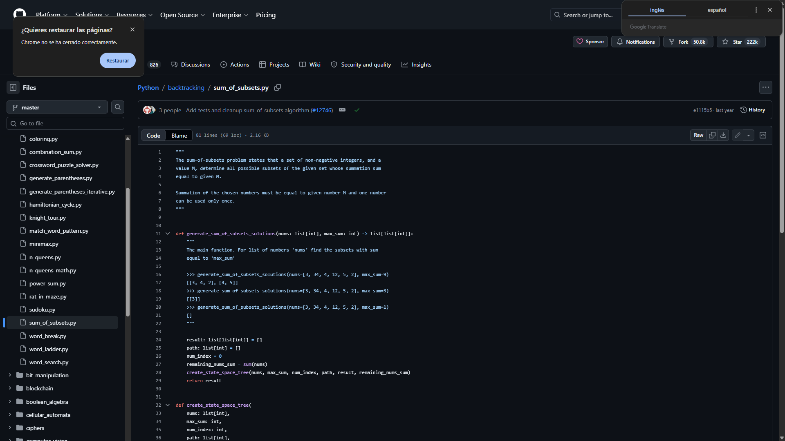
Resuelve el problema de Suma de Subconjuntos: dado un conjunto de números y un valor M, encontrar todos los subconjuntos cuya suma sea M. Es el problema más parecido al nuestro (selección de subconjunto con restricciones). Implementa la misma poda anticipada: si la suma actual ya supera el objetivo, o si la suma restante disponible no alcanza para llegar al objetivo, se descarta esa rama.
puede_podar(): así como ese código pregunta "¿la suma restante puede alcanzar el objetivo?", nosotros preguntamos "¿los candidatos restantes pueden cumplir los mínimos de programa, semestre y ciudad?"
Medium — The Choose-Explore-Unchoose pattern (Alberto Arrigoni)
https://medium.com/@albertoarrigoni/the-choose-explore-unchoose-pattern-for-backtracking-c0a519a3c2e8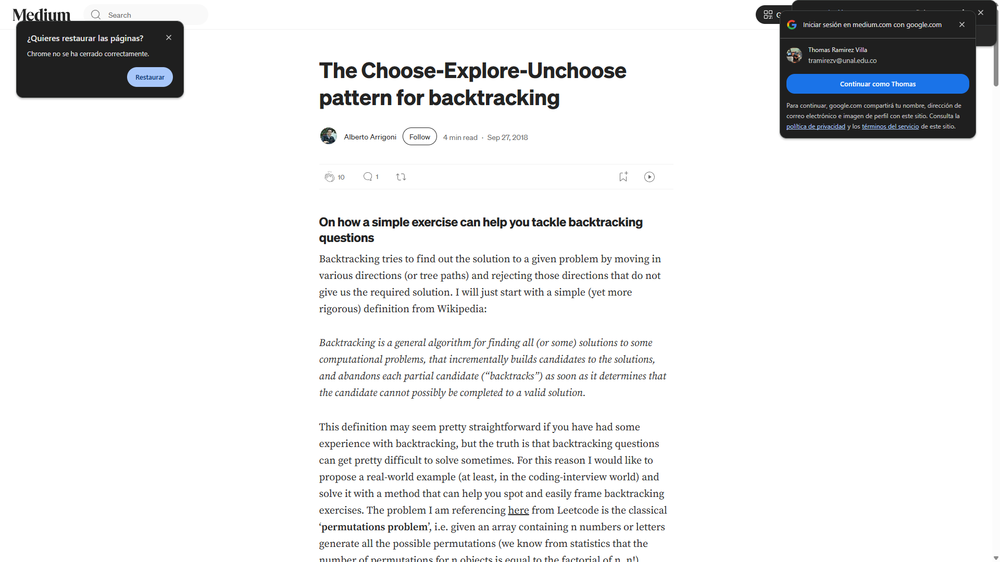
Explica el patrón "Choose → Explore → Unchoose" como la forma estructurada de pensar backtracking: Choose = tomar una decisión parcial, Explore = continuar recursivamente si la decisión es válida, Unchoose = deshacer la decisión y probar la siguiente opción. Es el marco mental que usamos para diseñar las 5 funciones del algoritmo.
es_solucion_completa, obtener_candidatos, es_valido, puede_podar, backtracking) sigue exactamente este patrón. En la bitácora lo llamamos "elegir-recursar-retroceder".
Poda Anticipada — puede_podar()
Fuente de las técnicas de poda que permiten descartar ramas del árbol de búsqueda
GeeksforGeeks — Subset Sum Backtracking
https://www.geeksforgeeks.org/subset-sum-backtracking-4/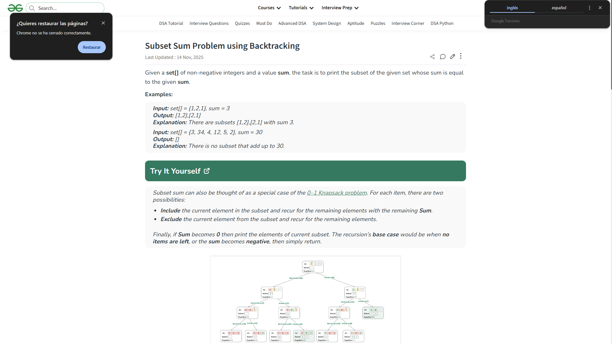
El artículo explica las dos condiciones de poda clásicas para problemas de subconjuntos con restricciones: (1) verificar máximos inmediatamente al agregar un elemento, y (2) verificar mínimos mirando al futuro (¿los candidatos restantes alcanzan para cumplir la cuota?). Esto es exactamente lo que distingue nuestra función es_valido() (verifica máximos) de puede_podar() (verifica mínimos hacia el futuro).
puede_podar() viene directamente de aquí: si los candidatos válidos restantes son menos que los estudiantes que faltan, es imposible completar la muestra. La Condición 0 (poda global de ciudades) es una extensión de esta idea aplicada a la restricción de ciudad.
GitHub — Python DSA Patterns: Backtracking Basics
https://github.com/abhijithwarrier/Python-DSA-Patterns/blob/main/notes/pydsap_12_backtracking_basics.md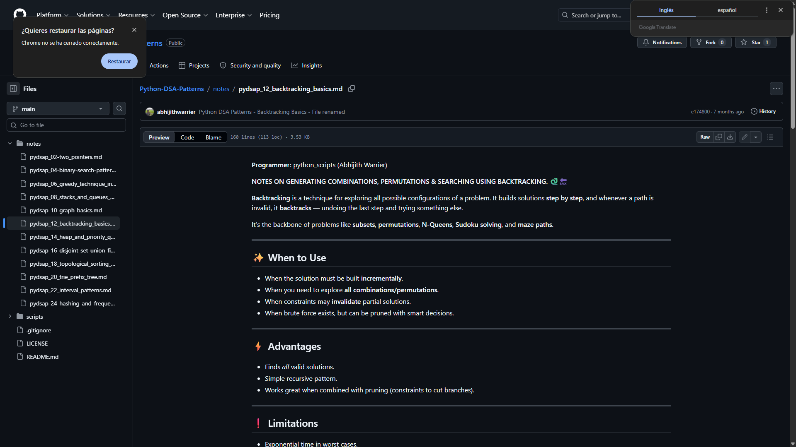
Explica el concepto de backtracking como "explorar todas las configuraciones posibles, construyendo la solución paso a paso, y cuando una ruta es inválida, deshacer el último paso e intentar otro". Incluye el diagrama del árbol de búsqueda y la distinción entre restricciones de validez inmediata y restricciones que requieren ver al futuro.
es_valido()) y restricciones que requieren ver al futuro (→ puede_podar()). Esta fue la decisión de diseño más importante y más difícil de entender al principio (ver Bitácora, Semana 1).
collections.Counter — Conteo de estudiantes por categoría
Fuente de la estructura usada en obtener_conteos()
Python Docs — collections.Counter
https://docs.python.org/3/library/collections.html#collections.Counter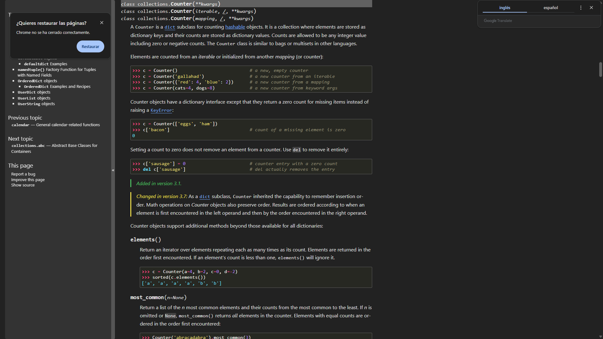
Counter es una subclase de dict que cuenta objetos. Lo clave para nuestro código: al acceder a una clave que no existe, retorna 0 en lugar de lanzar KeyError. Esto permite escribir por_programa.get("Fisica", 0) o simplemente por_programa["Fisica"] y siempre obtener un número seguro.
pandas.DataFrame — Visualización del pool y la muestra
Fuente de la librería usada para mostrar el dataset en tabla
pandas Documentation — DataFrame & to_string()
https://pandas.pydata.org/docs/reference/api/pandas.DataFrame.to_string.html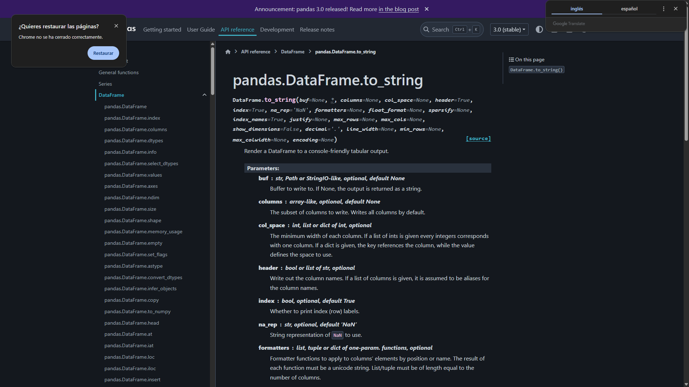
pandas.DataFrame acepta una lista de diccionarios directamente: cada diccionario es una fila, las claves son las columnas. El método to_string(index=False) imprime la tabla en consola sin el índice numérico de la izquierda, lo que da una salida más limpia para presentar.
df_pool = pd.DataFrame(POOL) convierte nuestra lista de 20 diccionarios en tabla. En ejecutar_busqueda(): pd.DataFrame(soluciones[0]).to_string(index=False) muestra la muestra encontrada de forma ordenada.
GeeksforGeeks — Pandas DataFrame to_string()
https://www.geeksforgeeks.org/pandas/python-pandas-dataframe-to_string/Explica todos los parámetros de to_string() con ejemplos. El parámetro index=False que usamos en el código viene de aquí: elimina la columna de índice (0, 1, 2...) que pandas agrega por defecto, dejando solo las columnas de datos.
print(df.to_string(index=False)) del notebook.
matplotlib — Gráficas de barras comparativas
Fuente de las celdas 13 y 14 del Colab que generan las dos imágenes de resultados
Matplotlib Docs — Grouped bar chart with labels
https://matplotlib.org/stable/gallery/lines_bars_and_markers/barchart.html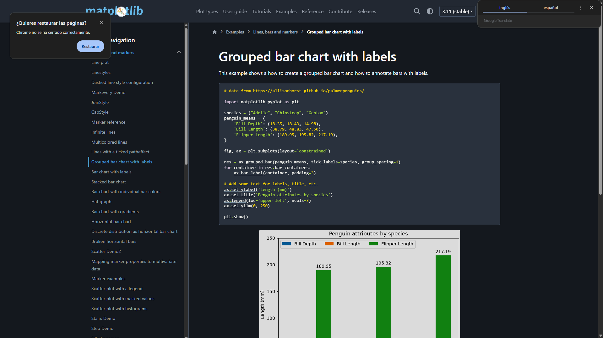
El truco de las barras agrupadas: desplazar la primera barra a x - width/2 y la segunda a x + width/2. Así dos barras quedan lado a lado para el mismo grupo de categorías. Usamos esto para mostrar Pool vs. Muestra en la misma gráfica.
graficar_comparacion() (Celda 13): ax.bar([xi - w/2 for xi in x], pool_vals, w) para las barras del pool (azul) y ax.bar([xi + w/2 for xi in x], muestra_vals, w) para la muestra (naranja).
GeeksforGeeks — Plotting multiple bar charts using Matplotlib
https://www.geeksforgeeks.org/python/plotting-multiple-bar-charts-using-matplotlib-in-python/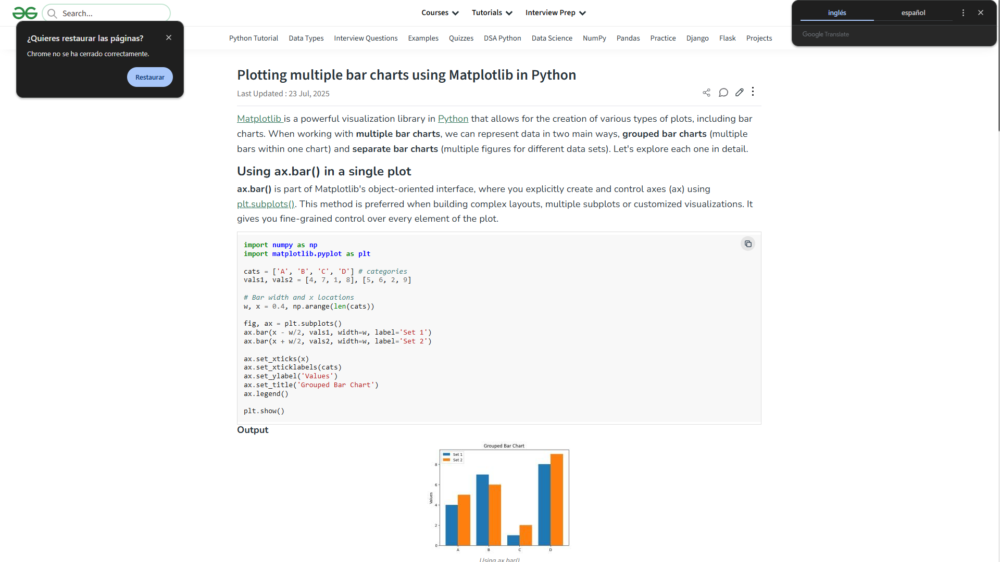
Cómo usar plt.subplots(filas, columnas) para crear una cuadrícula de gráficas. El patrón fig, axes = plt.subplots(2, 3) crea la cuadrícula de 2 filas × 3 columnas que usamos para las gráficas de distribución (programa / ciudad / jornada para cada conjunto de cuotas).
fig, axes = plt.subplots(2, 3, figsize=(14, 8)) en la Celda 13. Los axes[0] son la fila del Conjunto 1 y axes[1] la fila del Conjunto 2.
Evidencias — Resultados generados por el código
Imágenes reales producidas al ejecutar el notebook en Python
resultados/comparacion_distribuciones.png — generada por Celda 13
Muestra la distribución del pool original (azul, 20 estudiantes) vs. la muestra seleccionada por el algoritmo (naranja, 6 estudiantes) para los Conjuntos 1 y 2. Confirma que la muestra respeta las restricciones de cuota mínima por programa, ciudad y jornada.
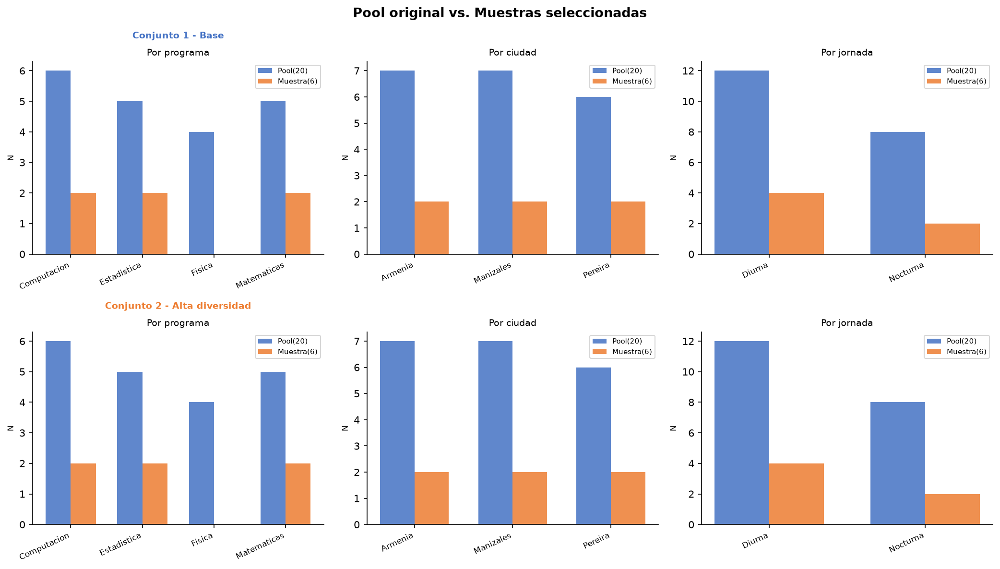
resultados/eficiencia_backtracking.png — generada por Celda 14
Compara las llamadas recursivas y ramas podadas de los 3 conjuntos. El resultado clave: C3 (imposible) se detecta en 1 sola llamada, mientras que C1 y C2 (con solución) se resuelven en 7 llamadas. Sin poda habría que evaluar 38,760 combinaciones.
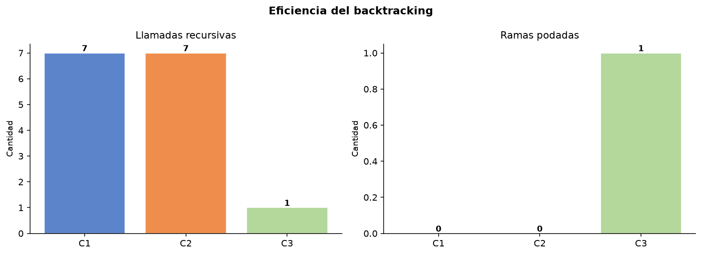
Todos los links — Tabla resumen
Referencia rápida de todas las fuentes usadas en el proyecto
| Parte del código | Fuente | Link |
|---|---|---|
| Patrón backtracking (elegir·recursar·retroceder) | TheAlgorithms/Python — all_combinations.py | GitHub |
| Poda por restricciones de subconjunto | TheAlgorithms/Python — sum_of_subsets.py | GitHub |
| Directorio completo de backtracking en Python | TheAlgorithms/Python — backtracking/ | GitHub |
| Patrón Choose-Explore-Unchoose | Medium — Alberto Arrigoni | Medium |
| Condiciones de poda anticipada | GeeksforGeeks — Subset Sum Backtracking-4 | GeeksforGeeks |
| Distinción validez inmediata vs. poda futura | GitHub — Python DSA Patterns (abhijithwarrier) | GitHub |
| Backtracking en Python explicado | Medium — Backtracking in Python (CodeToDeploy) | Medium |
| collections.Counter | Python Docs oficiales | docs.python.org |
| pandas DataFrame desde lista de dicts | pandas Docs — DataFrame.to_string() | pandas.pydata.org |
| pandas to_string() con parámetros | GeeksforGeeks — Pandas DataFrame to_string | GeeksforGeeks |
| Gráficas de barras agrupadas (Pool vs. Muestra) | Matplotlib — Grouped bar chart with labels | matplotlib.org |
| plt.subplots() con cuadrícula de gráficas | GeeksforGeeks — Multiple bar charts Matplotlib | GeeksforGeeks |
| matplotlib.pyplot.bar() — referencia oficial | Matplotlib Docs — pyplot.bar | matplotlib.org |